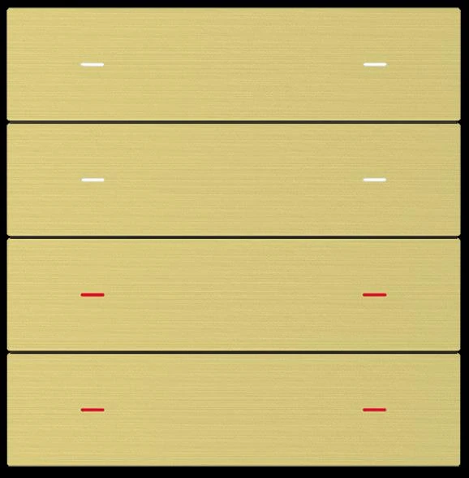
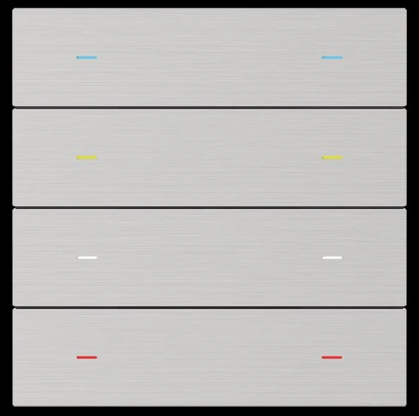
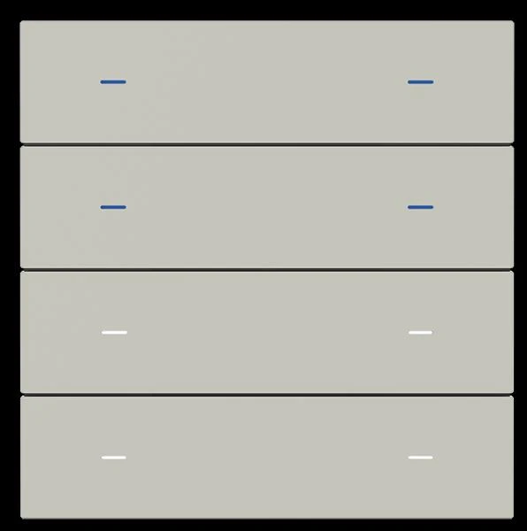
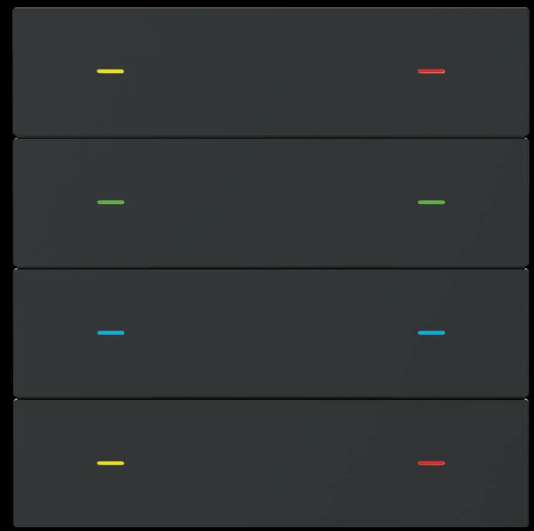
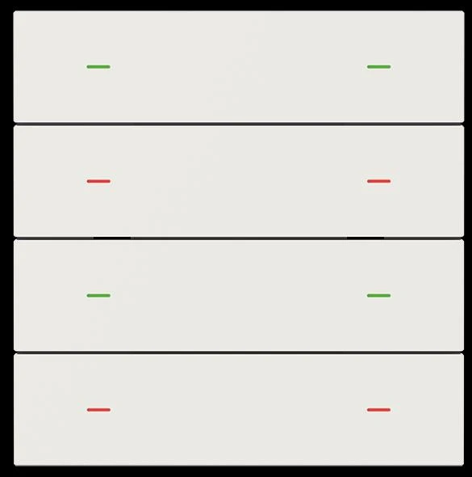

Kuningan sikat
Metal · Brushed brass
Touch sensor KNX
Pilih material dan warna yang sesuai dengan karakter ruang.

Metal · Brushed brass

Metal · Brushed aluminium

Finishing doff

Finishing doff

Finishing abu-abu

Finishing hitam

Finishing putih
Tersedia dalam satu, dua, atau empat bidang kontrol, dengan hingga delapan tombol sesuai konfigurasi.
Bantu saya memilih ↗